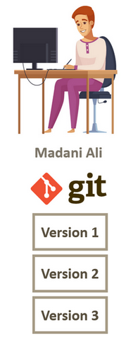
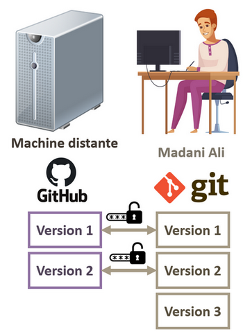
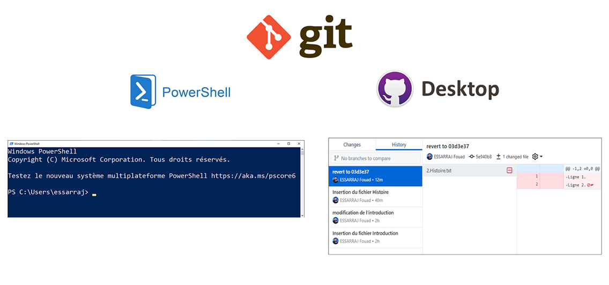

Présentation de la formation
Travail collaborative avec git et github.com
C’est quoi git et GitHub
Tous d’abord je commence par une petite définition sans entrer dans les détails. C’est quoi git et GitHub ?
Git est un outil qui vous permet de sauvegarder les modifications de votre projet afin de revenir en arrière à tout moment.
Dans cette formation, je vais vous montrer comment utiliser git et GitHub pour gérer l’historique des modifications de code source de vos projet.
Apprentissage de de 4 scénarios de travail avec git
Dans cette formation, je vais vous montrer comment utiliser git et GitHub en utilisant 4 scénarios
Scénario 1 – gestion des modifications et les versions dans la machine local
Dans le premier scénario je vais vous montrer comment gérer les modifications et les organiser en version en utilisant la machine local.
Je vous donne l’exemple du stagiaire Madani Ali qui va réaliser un article sur l’informatique. il a utilisé l’outil git dans la machine local et il a développé trois version de son article :
- version 1;
- version 2;
- et version 3.

Scénario 2 – gestion des modifications et les versions dans la machine local et distante.
Dans le deuxième scénario je vais vous montrer comment Madani Ali peut utiliser la machine distante en utilisant le service github.com qui leur propose de créer des répertoires git privés.
C’est à dire il peut publier ces propre version local vers la machine distante. il peut décider de publier par exemple la version 1 et la version 2 et garder la version 3 en version local.

Scénario 3 – travaille de façon collaborative en utilisant le service GitHub.com
Dans le troisième scénario, je vais vous montrer comment Madani Ali peut travailler de façon collaborative avec Chami Fatima en utilisant le service GitHub.
Tous d’abord, Fatima va installer git dans sa machine local. Ensuite, il va demander à Madani Ali de leur donner les droits d’accès pour accéder à son répertoire privé sur github.com.
Ensuit, il va copier le répertoire dans sa machine local de façon sécurisé.
Scénario 4 – travaille de façon open source en utilisant le service Github.com
Dans le quatrième scénario, je vais vous montrer comment Fatima peut aider Madani de façon public et de façon open source, c’est à dire sans que Madani Ali donne les droits d’accès à Fatima.
Dans ce cas, Fatima va commencer la modification du projet de Madani dans sa machine local. Ensuite, il va envoyer une demande de modification à Madani Ali.
Apprentissage en ligne de commande et GUI
Pendant la formation, je vais vous montrer comment utiliser git de deux façons. Tous d’abord en utilisant la ligne de commande avec PowerShell et l’interface graphique avec l’application GitHub Desktop
